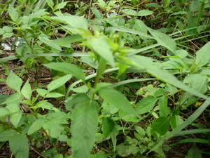

dekket1 
/dɔkkɔt/
v_rt.
“stick”
1.
v.
for something (egdekket, migdekket/indekket, dekket, agent, eg><ø-) to stick to something else (egdekketan, indekketan/migdekketan/pigdekketan, dekketan, dekketi, location, eg><an-)
Eng. stick; attach
Tigwanon: deket
Binukid: deket
WBM: deket
Ilianen: deket
Dibabawon: deket
Cotabato Manobo: deket
Cagayano: dekket
Obo: dakat
Proto: deket
Online dict status: -
Usage level: M
adj.
touching or stuck together
Nekegdekket ka ulaula ran diyè te litratu.
Their faces were touching in the picture.
v.
for something (egparekket, migpareket/impareket, pareket, theme, eg><ø-pA-) to stick
Egparekket a te pepil diyè te alabat.
I am sticking the paper on the wall.
Egpareket a te me litratu sika te alabat.
I will put up a pictures on the wall.
Eng. put up; stick; attach; glue; adhere
Tag. dikít
Ilo.: dekkét; idkét; pigkét
OCM: Ethnophysics (822), Ethnobotany (824)
Online dict status: -
Usage level: M
2.
n.
(dalumekket, dume-) a type of grass
Eng. grass
OCM: Flora (137)
DDP: Grass, herb, vine (1.5.3)
Online dict status: -
Usage level: M
Updated by: RJH,JLM,RJH,AAA,RJH,QDL,RJH,QDL,RAA,NJK,NJK,QDL
Last updated: 16/Feb/2015
This page last updated: 28-Dec-2019
Copyright © 2009-2014, Matigsalug Language Christian Association, Inc